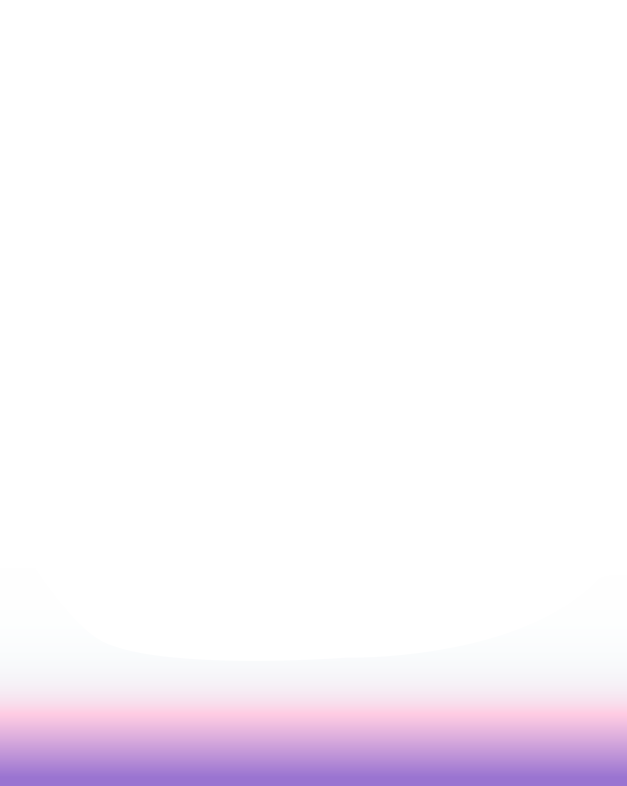

Alicia en el país de las maravillas
✧ Una novela gráfica ✧
Dominique Beriestain | Nayarit Betancourt | Daniela Brito
Fernanda Caniullan | Emil Gatica | Dusan Ivelic

¿Qué es ese ruido? Como si unas hojas se estuvieran moviendo...